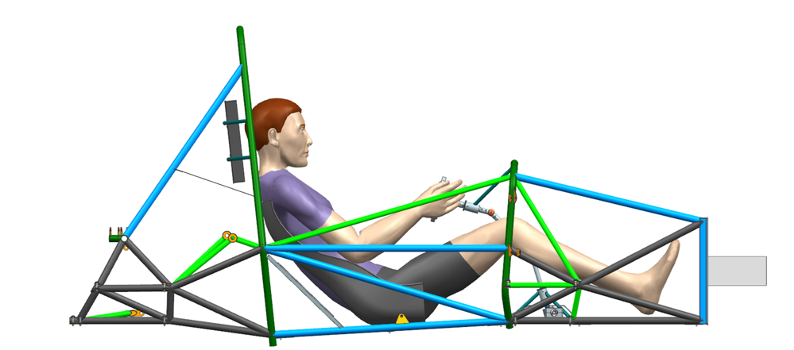
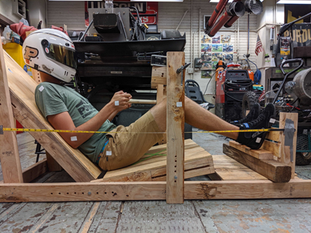
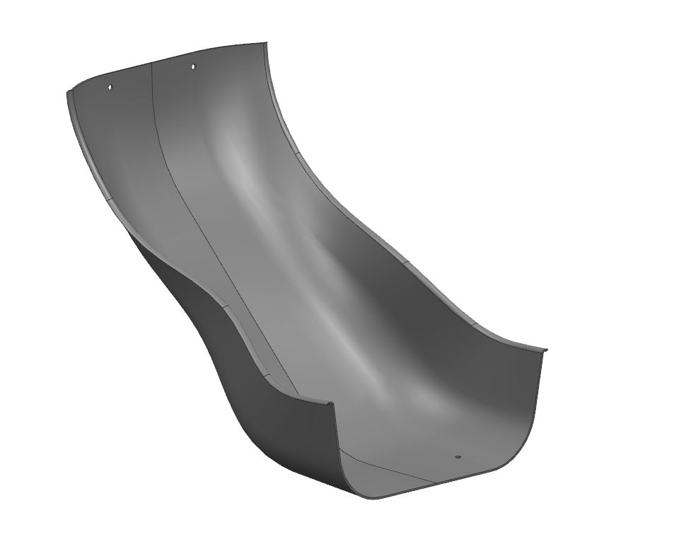
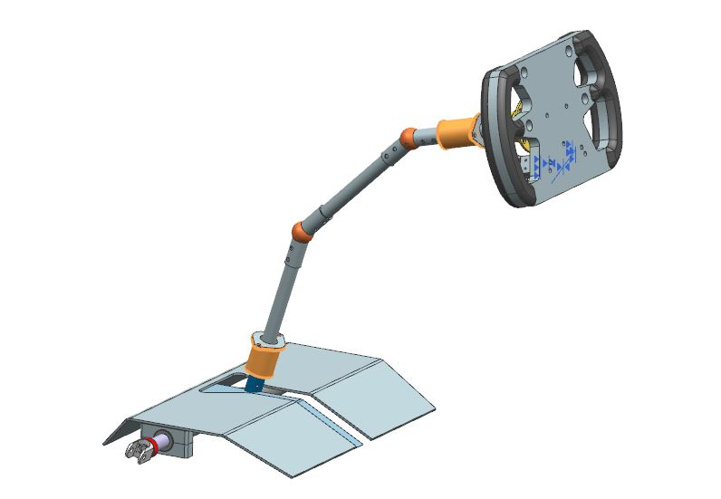
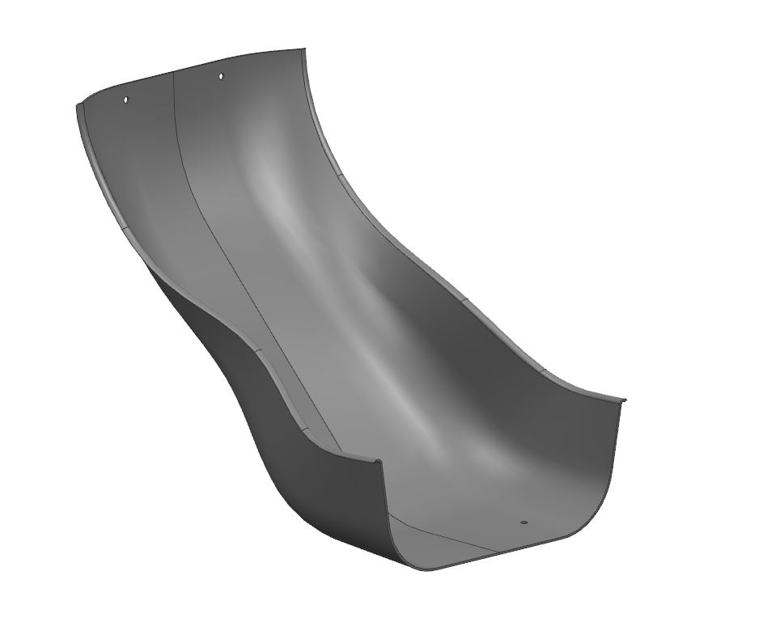
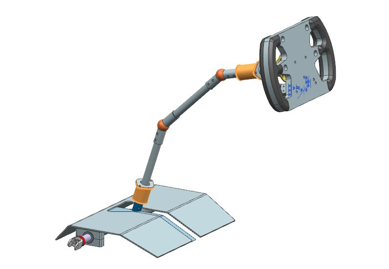
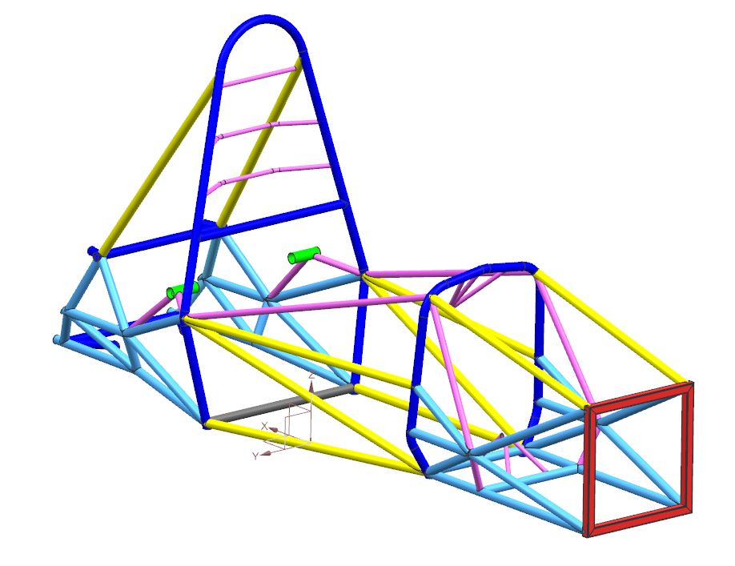
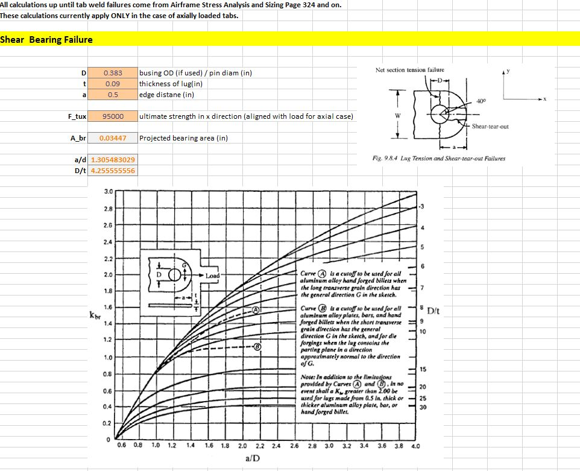
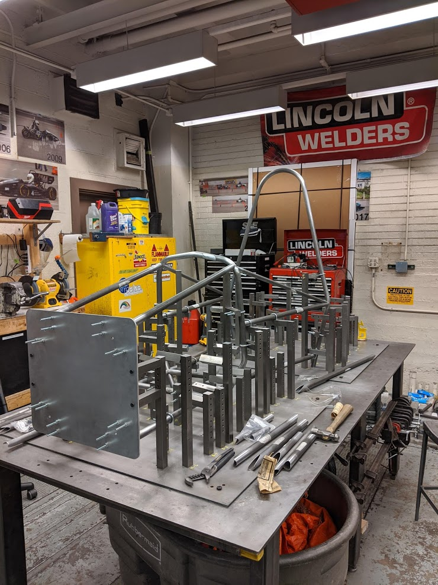
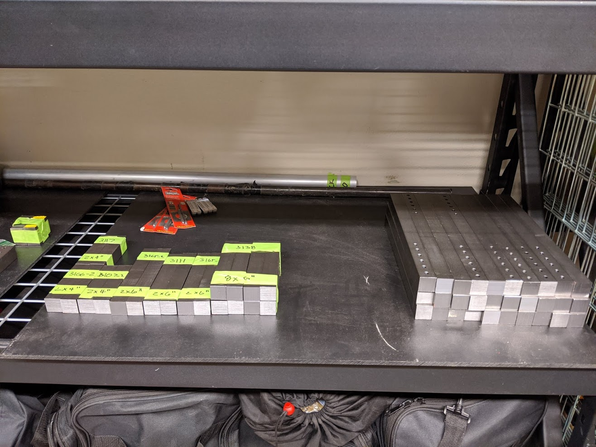

PF20
PF20
Ergonomic Improvements
One of the primary goals of the PF20 chassis was to improve overall vehicle ergonomics. This was done through a number of improvements starting with a complete driver position overhaul using a mockup of the cockpit during the design process. This allowed us to play with driver position and the positions of vehicle controls to improve drivability and comfort. Other improvements included a custom surface modeled carbon seat based on geometry taken from the ANSUR human models in NX 12 and a redesigned steering system which significantly reduced steering play.
 



Design Process
The design process began with material selection. A steel frame design previously used by the team was selected over a partial monocoque as the potential weight savings did not outweigh the reduction in testing time required. 4130 steel in combination with ER70S-2 filler rod was used as it does not require any preheat, post heat, or interpass heating with tubing less than .125” and also offers a good blend of forgiving welding characteristics and desirable material properties. Once this was decided upon, the full chassis was modeled in NX including all necessary hardware, manufacturing jigs, and any other projects which fall under the umbrella of the chassis team. During this process I managed a team of two experienced members as well as three active new members.
Analysis
Analysis was completed using both beam and solid element models in ANSYS 2019 R1 as well as through custom structures analysis tools created by the team. I was most involved in the generation of the lug analysis tool based on calculations from Airframe Stress Analysis and Sizing which was used to size all safety critical lugs on the chassis which were held to a 1.4 SF on ultimate. Chassis performance analysis this year was also reconsidered and we changed from defining chassis performance on torsional stiffness to the direct impact on Lateral Load Transfer Distribution (LLTD). This is because LLTD has a direct and measurable impact on suspension performance and ability to tune understeer and oversteer characteristics of the vehicle.
Manufacturing
One of the largest improvements made during the 2020 competition year was the further optimization of the manufacturing process. By using standardized welding jigs to hold the majority of the tubes in place during welding manufacturing time was greatly reduced and accuracy of the final chassis was improved. Standardized jigs also allowed for the use of CNC machining which cut the manufacturing time for the horizontal hole process of an individual jig from 20-30 minutes on a manual mill to under a minute on a CNC mill.
 